Ideation
Brainstormed a wide range of concepts spanning app-only, wearable, and physical device approaches.
A smart, multisensory reminder system that turns medication into a daily habit rather than a chore. AREMIND combines a light-and-vibration bottle topper, an RFID tap-to-confirm dock, a companion wristband, and a web-based scheduler to help adults with ADHD build consistent medication routines.
ADHD makes it hard to remember routine tasks like taking medication. Missed doses aren't usually about not caring — they're about forgetfulness, distraction, and inconsistent daily routines. Existing solutions (phone alarms, pill organizers) are easy to ignore or don't fit into how people with ADHD actually build habits.
Brainstormed a wide range of concepts spanning app-only, wearable, and physical device approaches.
Scored 10 early pill-holder concepts against feasibility, cost, durability, ease of use, and effectiveness — narrowed down to the strongest directions.
Weighted six finalist concepts against alert effectiveness, detectability, timing/tracking, setup time, and cost.
Combined the best sub-functions across concepts into five full solution candidates.
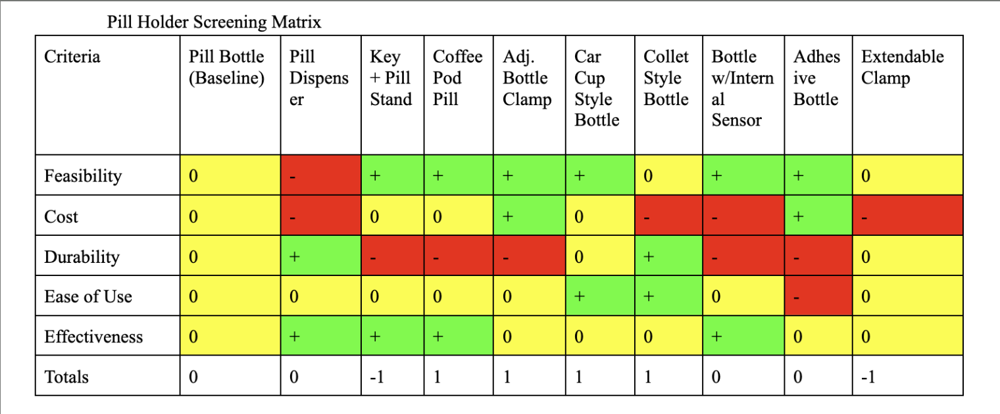
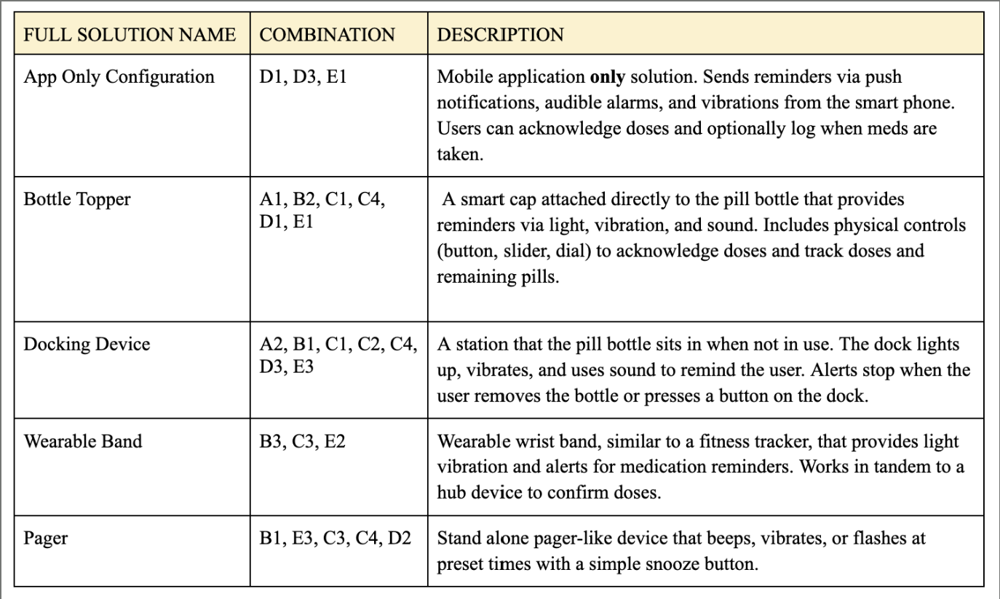
We weighted alert effectiveness and detectability highest, since a reminder that isn't noticed defeats the purpose. The Bottle Topper won clearly — it scored best on the criteria that mattered most while staying cheap and easy to set up.
| Concept | Score |
|---|---|
| 🥇 Bottle Topper | 4.8 |
| 🥈 Docking Device | 3.8 |
| 🥉 Wearable Band | 3.5 |
| Handheld Device | 3.2 |
| Medical Prompt | 3.2 |
| App Only Configuration | 2.5 |
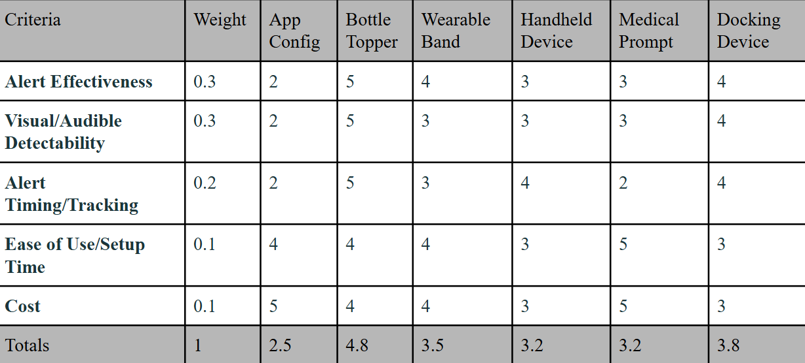
The design went through several rounds of physical prototyping, split across two parallel tracks: the pill holder itself, and the companion wristband.
The bottle topper moved from a hand-cut cardboard mockup, to a breadboarded electronics version wired to the real pill bottle, to a final 3D-printed enclosure housing the light, vibration motor, and RFID reader.
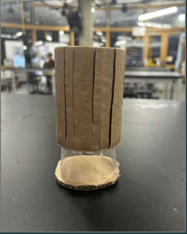
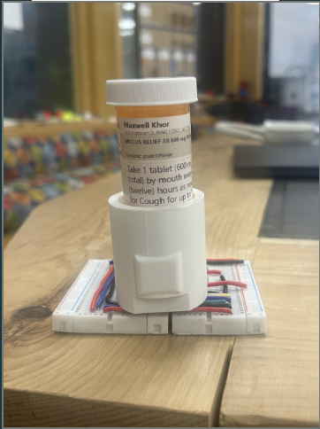
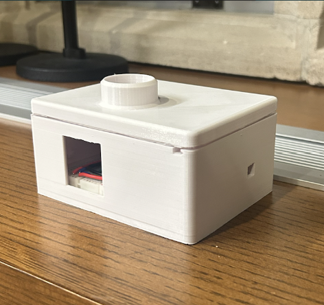
The wristband was designed in parallel as a wearable companion to the topper — modeled in CAD first, then sewn as a soft fabric band with a Velcro closure to house the embedded module comfortably against the wrist.
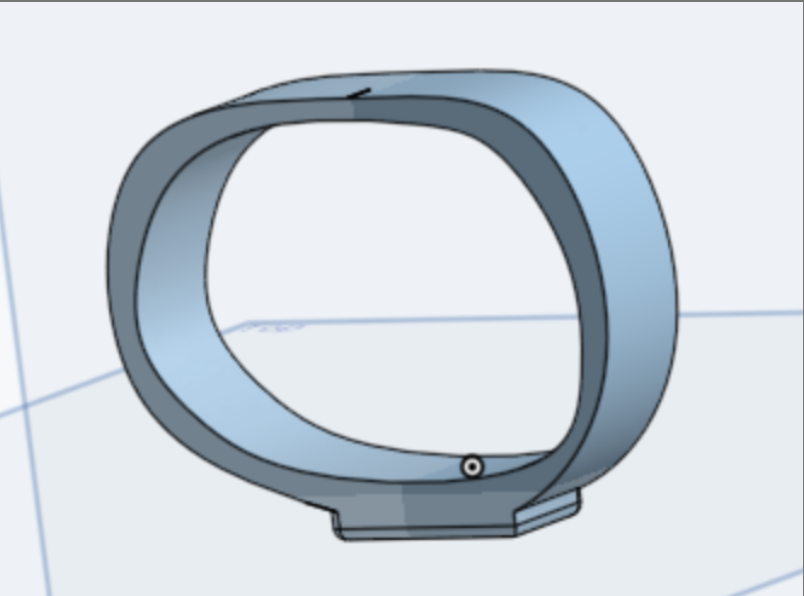
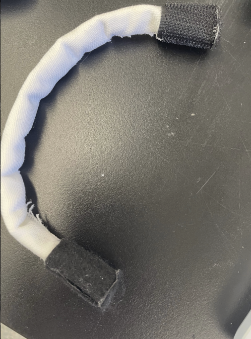
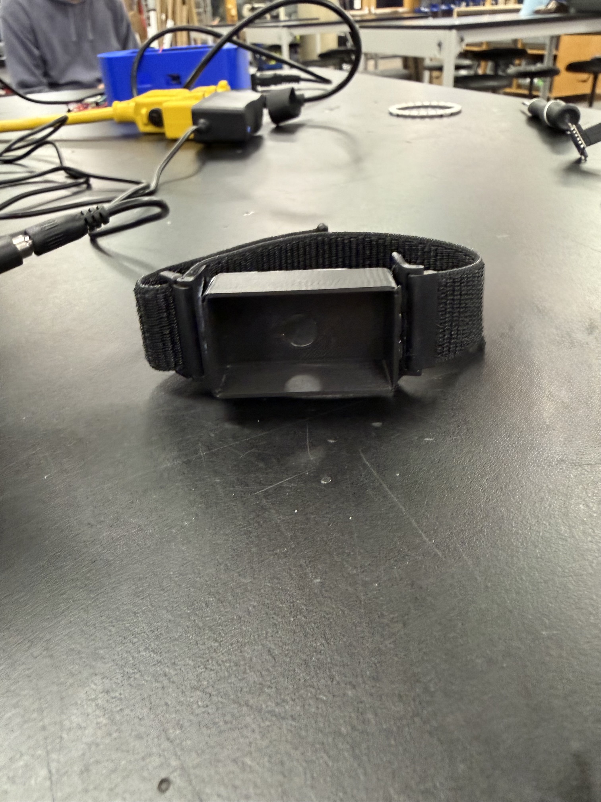
Alongside the hardware, we designed and built a companion web app for setting up and personalizing reminders. It started as hand-drawn wireframes mapping out account creation, a calendar view, and per-dose time tracking, then went through two working iterations of the actual interface.
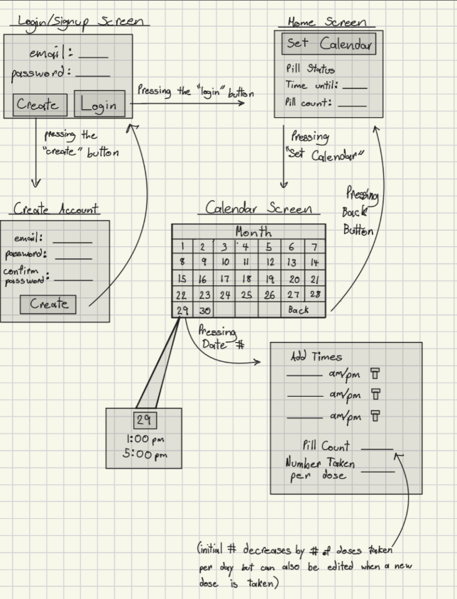
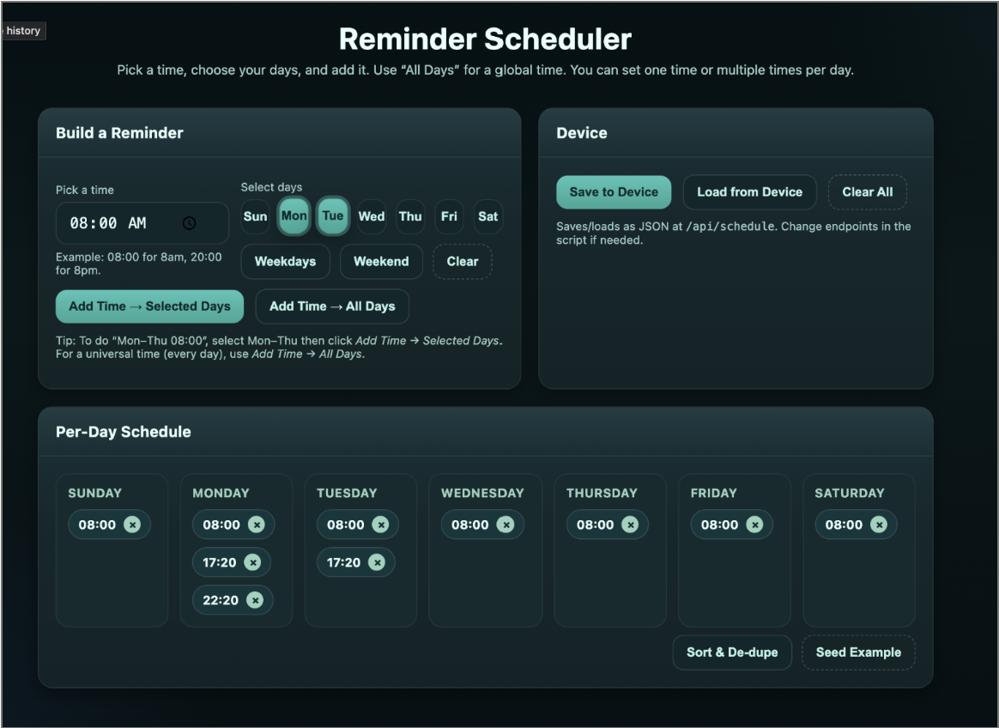
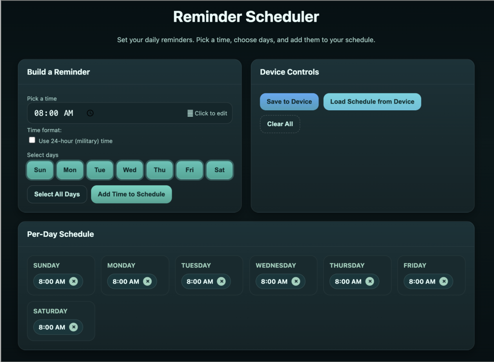
The finished prototype pairs a 3D-printed bottle topper (light + vibration + RFID reader) with a soft wristband and the web-based scheduler. When a dose is due, the topper lights up and vibrates; the user taps their RFID key fob on the reader to confirm the dose and reset the reminder — closing the loop between reminder, action, and reward.
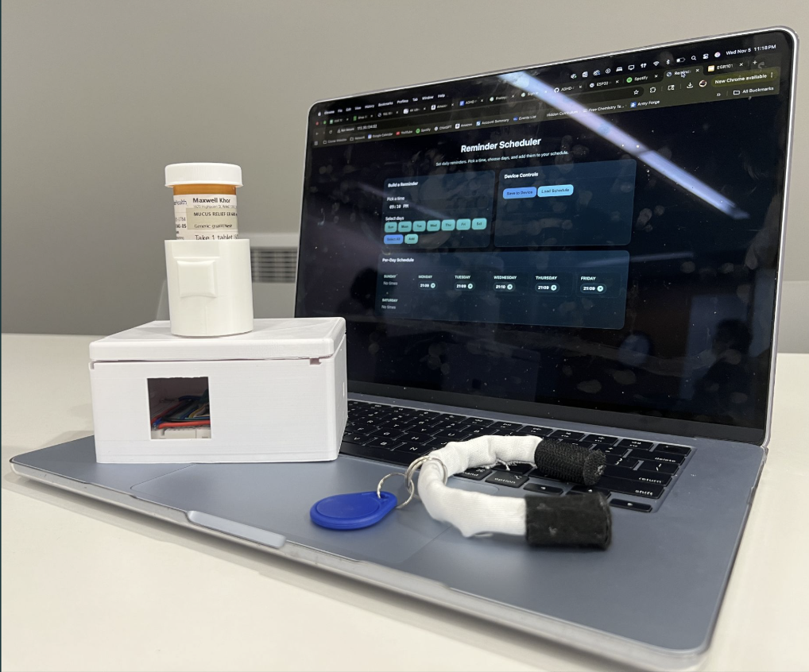
| Test Target | Success Criteria |
|---|---|
| Detectability | Alerts noticed by >90% of users |
| Setup Time | First-time setup completed in <30s |
| Connectivity Range | Bluetooth remains stable up to 30m |
| Battery Life | Operates >4 days with <10% power loss |
| Durability | Survives 5 drops from 1m with no damage |
This was a multi-faceted problem — forgetfulness, distraction, and inconsistent routines — met with a multi-faceted, personalizable solution combining touch, light, and habit reinforcement across hardware and software.